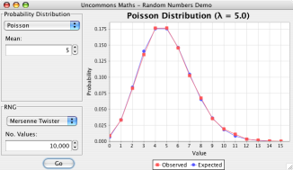

Uncommons Maths is Open Source software, free to download and use subject to the terms of the Apache Software Licence, Version 2.0.
A Java Programmer's Guide to Random Numbers: Part 1: Beyond java.util.Random · Part 2: Not just coins and dice · Part 3: Seeding
The Uncommons Maths library provides five easy-to-use, statistically sound, high-performance pseudorandom number generators (RNGs). They are:
java.util.Random,
does not have the same statistical flaws as that RNG and also has a long period (219937).
java.util.Random.
java.security.SecureRandom. Reverse-engineering the generator state from observations of its
output would involve cracking the AES block cipher.
Using the included probability distribution wrappers, these RNGs (and the standard JDK ones) can be used to generate values from Uniform, Normal, Binomial, Poisson and Exponential distributions.
Launch the Uncommons Maths demo application (requires Java WebStart) to experiment with the different distributions.
Good RNGs need good seed data. Uncommons Maths provides pluggable seeding strategies, including ones to
read random data from /dev/random (where available) and from
random.org.
Uncommons Maths also includes generics-enabled combination and permutation generators. These are based on Java classes originally written by Michael Gilleland.
Uncommons Maths provides a statistical data set class that can calculate a variety of descriptive statistics (variance, median, standard deviation, arithmetic and geometric means, etc.) for a set of values.
Uncommons Maths also includes a Rational number type that allows exact fractional arithmetic without
loss of precision.
Classes for manipulating binary values.